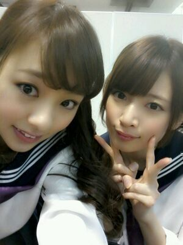
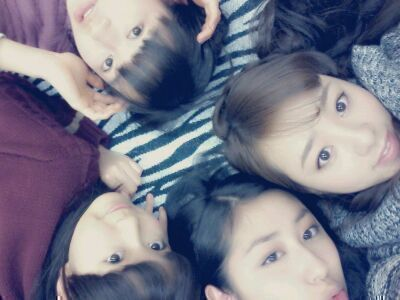

やあっ ☆!
ろってぃ-だよぉ(・ω・)

髪の毛乾かし終わって
ベッドに
『ふぁ〜。』ってなって
倒れこんだナウ♪わお。
今日は京都で
全国握手会でした^^
全握のスタート★
影ナレは まひろ頑張ったよ(・ω・)
やったよ /るん
今回こそ噛まずに
言えたんちゃうっ〃∀〃!?笑
だんだん早なって言って
何ゆっとんか
分からんなったわ。
とか思った人ぉ〜笑 ?
はいっ )))
まひろのマミーです´・ω・笑
とりあえず
小さい頃から
一生懸命話しても
何ゆうてるのか分からんのは
まひろの特徴の１つとしてさあ...
甘めに見てほしいよ=・ω・=♪あ.
そしてX'masプレゼントは
スマートフォン様の
手袋☆☆
色合い的には
ピンクと紫やねん !
めちゃ便利やし柄が可愛くて
見た瞬間きにいっちゃってさ☆
当たった方、
おめでとう(〃∀〃)
今回 握手会は
ななみん とペアで
やったお。♪
握手に来てくれた皆様
ななみん一推し★の皆様
ろってぃ-夢☆の皆様
今日も本当に
ありがとうございました。
あたたかい人ばかりで
とっても楽しかったです(*^^*)
色々と話せて嬉しかったです。照
今日の夜
メンバーと過ごしたこと
明日blogに書きます♪
だから
次のblogも是非
読んでくだしゃい。=・ω・=
ほな まひろ、
眠たいから寝るなぁ〜( ´ω` )?
おやすみなさい...
のし？
昨日とちゃう写メやで☆

皆様 大好きぃ〜 f(^^キャッ
のし。